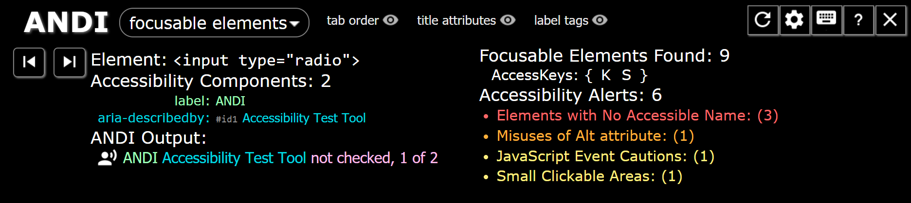

Meet ANDI.
ANDI (Accessible Name & Description Inspector) is a free tool to test websites for accessibility.
ANDI is a "favelet" or "bookmarklet" that will:
- Provide automated detection of accessibility issues
- Reveal what a screen reader should say for interactive elements (the accessible name computation)
- Give practical suggestions to improve accessibility and check 508 compliance
Installation Instructions
Drag and Drop this link: ANDI into your browser's favorites/bookmark bar.


Chrome

- Ensure that Chrome's Bookmarks Bar is visible (Ctrl + Shift + B)
- Now drag and drop this link: ANDI to the Bookmarks Bar
- ANDI is now installed to Chrome and ready to be launched
Unfortunately, Chrome does not offer a simple keyboard accessible alternative to save a link as a bookmark.
Firefox

- Ensure that Firefox's Bookmarks Toolbar is visible
- Right click this link: ANDI and select "Bookmark This Link". Add it to the Bookmarks Toolbar. Alternatively, keyboard users running Windows can tab to this link: ANDI, press ctrl+shift+F10 (which brings up a context menu) and select "Bookmark This Link". Add it to the Bookmarks Toolbar
- ANDI is now installed to Firefox and ready to be launched
Internet Explorer

- Ensure that IE's Favorites Bar is visible
- Right click this link: ANDI and select "Add to favorites bar". Alternatively, keyboard users running Windows can tab to this link: ANDI, press ctrl+shift+F10 (which brings up a context menu) and select "Add to favorites bar"
- ANDI is now installed to IE and ready to be launched
Edge

The version of Edge you have may not allow the direct installation of favelets (such as ANDI). As a workaround...
- Install ANDI to Chrome or Firefox
- Use Edge to import favorites from Chrome or Firefox
- Once imported, ANDI can be moved into Edge's Favorites Bar for quick launching
Safari

- Ensure that Safari's Favorites Bar is visible (Command + Shift + B)
- Drag and drop this link: ANDI to the Favorites Bar
- ANDI is now installed to Safari and ready to be launched
Unfortunately, Safari does not offer a simple keyboard accessible alternative to save a link as a favorite.
Launch ANDI
Launch ANDI by clicking on the favorite/bookmark labelled "ANDI" that was added to the Favorites/Bookmarks Bar in the browser's toolbar. ANDI will analyze the test page and appear on the page.
For thorough documentation of all features, visit: ANDI's User Guide.
Looking for a site to demo ANDI? Visit our demonstration page.
Benefits Of ANDI
ANDI is like having an expert at your side, helping you ensure your website is meeting accessibility standards. Include ANDI in screenshots during your manual accessibility review. Use ANDI during development to help you build accessible websites.
Whether you're an accessibility expert or you're new to Section 508 compliance, ADA compliance, or WCAG standards, you should definitely check out ANDI.
Updates
ANDI updates itself automatically; There is no need to reinstall or upgrade.
View ANDI on github to see version history.
How To Uninstall
To uninstall ANDI simply delete the favorite/bookmark that was created in installation.
Open Source on github
ANDI is an open source project created by the Accessible Solutions Branch of the Social Security Administration. The source code is available for contribution on github.
If your organization wishes to host a local instance of ANDI, the accessibility test tool, refer to this guide:
How to Host Your Own ANDI
- Download the ANDI's source code from GitHub.
- In the andi.js file:
- modify the
host_urlto point to your custom location. - (optional) modify the
jqueryDownloadSourcelocation to your custom jquery location.
- modify the
- Modify the favelet's launch script to point to your host: